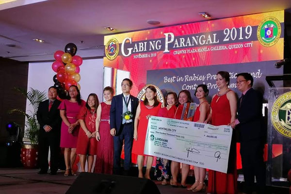
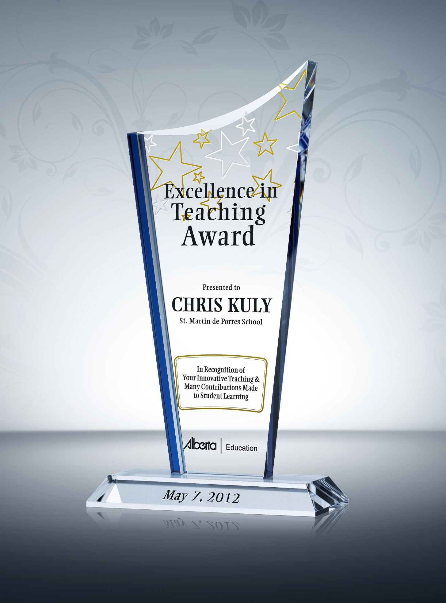
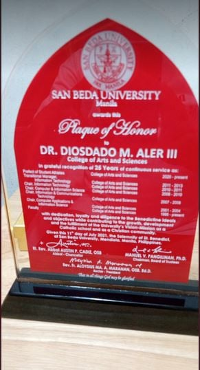
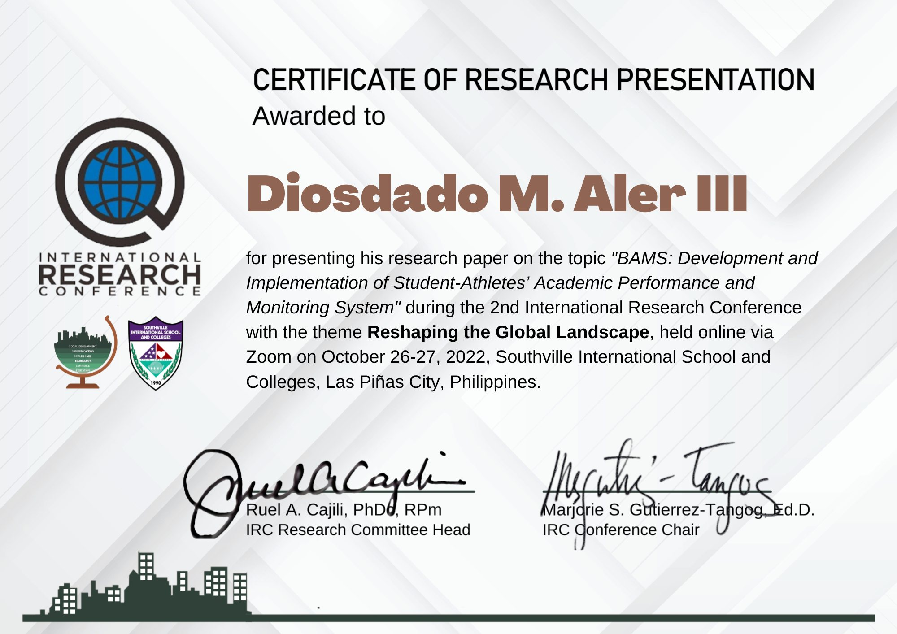
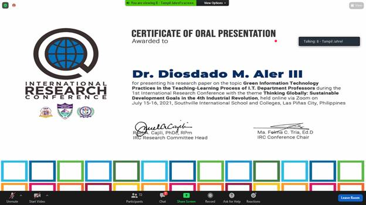

- First Place - Paper Presentation (Technology, Engineering and Sciences Category , 3rd International and Annual Convention – Philippine Association of Extension Program Implementers (PAEPI-Global), Bahay Kalinaw University of the Philippines Diliman, Quezon City,
February 22-23, 2016

- Outstanding Organization Moderator, Gabi ng Parangal San Beda College of Arts and Sciences March 2013

- Featured in PCWorld Philippines Campus Edition Volume 1 Number 1 2012 in the section “People Power “in an article entitled “Linking the Digital Divide†on page 27

- Top Ten Faculty Members on Student Evaluation (ranked 9th) -- San Beda College SY 2010-2011
- Teaching Excellence Award -- Far Eastern University – East Asia College, First Semester SY 2008-2009 February 21, 2009

- Top Ten Faculty Members on Student Evaluation (ranked 4th) -- San Beda College SY 1996-1997 – Oct 24, 1997
- Silver Medalist – Oratorical Contest – 1st Year High School Level, National Teachers College, October 1982
- Twenty-Five (25) Years of service marked by dedication, loyalty, diligence, and commitment to San Beda University.

- 2nd International Research Conference with the theme Reshaping the Global Landscape

- Presenting research paper on the topic Green Information Technology Practices in the Teaching-Learning Process of I.T. Department Professors during the 1st International Research Conference with the theme Thinking Globally: Sustainable Development Goals in the 4th Industrial Revolution.
